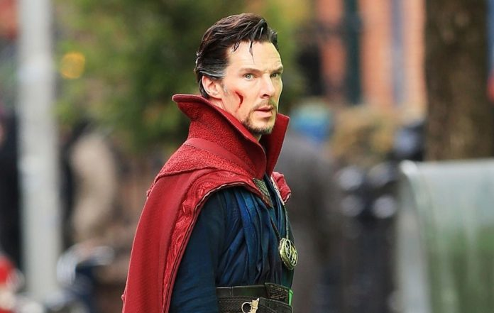

Doctor Strange was a comic unlike any other. As Sorcerer Supreme of Earth, the hero traveled to other dimensions and fought unique villains such as Nightmare, Eternity, and the dread Dormammu. References to the Eye of Agamotto and the Great Book of the Vishanti hinted at almost unimaginable wonders. Lee kept the dialogue exciting and enjoyably florid, punctuating Strange’s speech with exclamations such as “By the hoary hosts of Hoggoth!” Ditko provided much of the story plotting, and his illustrations complemented Lee’s sometimes outrageous prose with eye-catching images that pushed the boundaries of the comic art of the day.
 Return_to_Index_Page